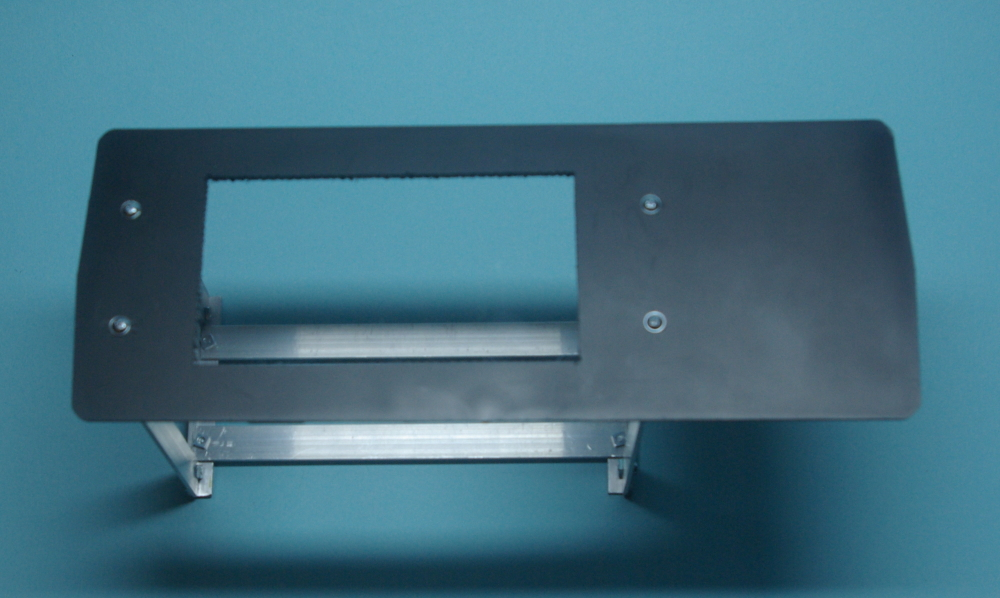
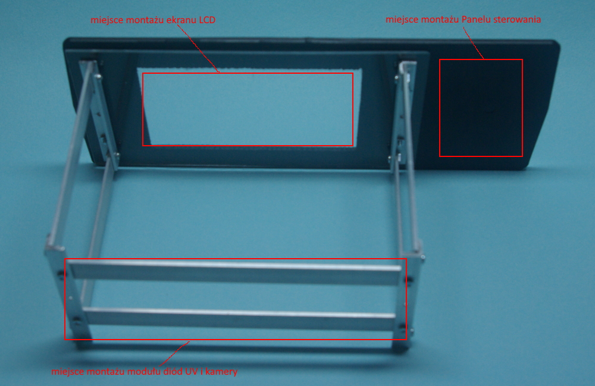
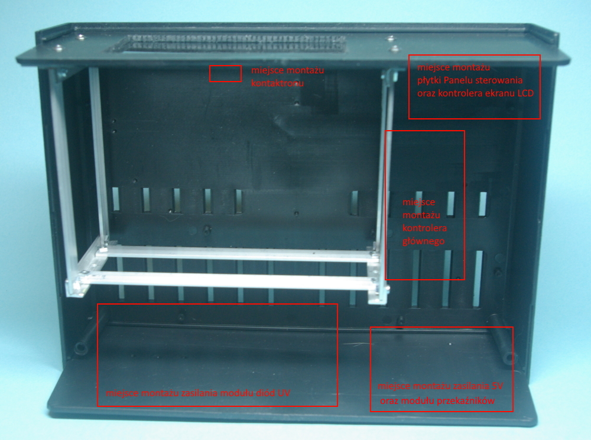

Schemat urządzenia
Założenia i ograniczenia dla pierwszego prototypu
Podstawowym celem budowy pierwszego prototypu było rozmieszczenie głównych elementów urządzenia – a zwłaszcza skonstruowanie elementu wykonawczego, czyli osadzenia na wspólnym szkielecie ekranu LCD, modułu diód UV, kamery oraz podświetlenia ekranu.
Spełnione przy tym muszą być następujace założenia:
- Kamera i ekran LCD powinny być umieszczone w płaszczyznach równoległych, współosiowo i w odległości gwarantujacej uzyskanie z kamery obrazu zawierającego widok całego ekranu o jak najlepszej szczegółowości. W wyniku testów wyznaczono tę odległość – wynosi ok. 12cm
- Moduł diód UV powinien znajdować się mniej więcej w płaszczyźnie kamery – tak, by było możliwe równomierne oświetlenie ekranu LCD. Jednocześnie elementy tego modułu nie mogą wchodzić w obszar roboczy kamery.
- Pokrywa osłaniająca ekran od góry powinna być uchylna i nie powinna przepuszczać promieniowania UV
- Podświetlenie ekranu światłem białym powinno być nakładane na ekran od góry, w sposób uniemożliwiający poruszenie obiektu (płytki) znajdującego się na ekranie.
- Wszystkie komponenty elementu wykonawczego urządzenia powinny być osadzone na wspólnym szkielecie zapewniającym sztywność konstrukcji i stałe wzajemne położenie przede wszystkim kamery i ekranu LCD.
- Wymiary elementu wykonawczego powinny umożliwiać zamontowanie go w wybranej do budowy urządzenia obudowie
- Montaż szkieletu elementu wykonawczego do obudowy powinien być łatwy do wykonania i dodatkowo powinien usztywniać konstrukcję. Założenie prostoty dotyczy również demontażu
- Moduły zasilania oraz radiatory modułu diód UV powinny znajdować się w częsci obudowy zapewniającej najlepszą wentylację
Budowa pierwszego prototypu
Szkielet elementu roboczego z zamontowanym panelem górnym urządzenia
Widok z góry

Widok z przodu

Komponenty elementu roboczego z zaznaczonym miejscem ich zamontowania do szkieletu


Komponenty Panelu sterowania wraz z ich orientacyjnym rozmieszczeniem na płycie górnej urządzenia:

Sposób zamontowania szkieletu elementu roboczego w obudowie oraz miejsca montażu zasilania, kontrolera i kontraktonu kontrolującego zamknięcie pokrywy osłony ekranu LCD

Sposób montażu pokrywy – w pozycji zamkniętej